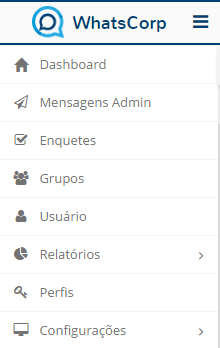
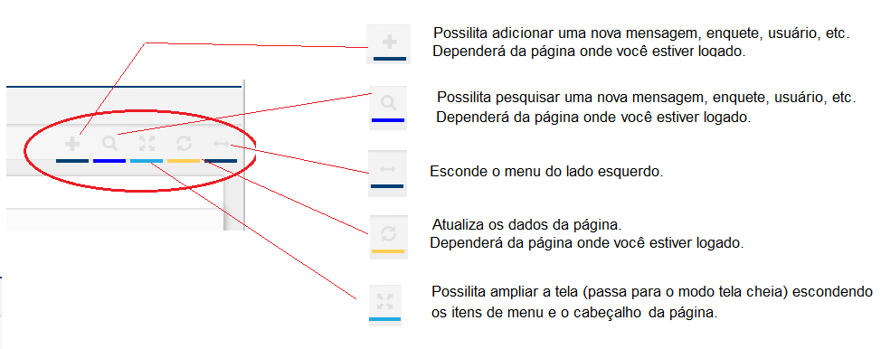

Módulo Web
Ao acessar o módulo web, você irá visualizar o menu lateral

Dashboard - Essa funcionalidade é exclusiva do corpo técnico.
Mensagens Admin - Opção para o envio e gestão das mensagens especiais com opção de consulta para saber quem recebeu e\/ou confirmou recebimento.
Enquetes - Opção para o envio e gestão das enquetes que serão aplicadas na rede de colaboradores de forma global ou segmentada.
Grupos - Opção para criar e gerenciar os grupos e suas características especiais.
Usuários - Única opção para inserir um usuário na rede. Só tem acesso usuários com perfil liberado para tal.
Relatórios - Opção para consultar os relatórios e auditar as trocas de mensagem e as participações.
Perfil - Opção para atribuir perfis de administração na solução.
Configurações - Essa funcionalidade é exclusiva do corpo técnico.
No Módulo Web o usuário tem a sua disposição opções de customização e atalhos:
